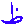
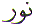
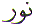
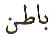

The position of the Letter Zoin ( ) in the normal Arabic character set is 17. In the Abjad format it is the 27th letter with numerical value equal to 900. This article is about the spiritual meaning of the Letter Zoin ( ).
The Letter Zoin () is odd in the sense that it has
the numerical value 900. This is 100 times the numerical value
of the Letter Toin ( ) which is 9. Not
only that, but in the Abjad format the Letter Zoin () is the 27th Letter which again
reduces to (27 = 2 + 7 = ) 9. Where as the Letter Toin (
) which is 9. Not
only that, but in the Abjad format the Letter Zoin () is the 27th Letter which again
reduces to (27 = 2 + 7 = ) 9. Where as the Letter Toin ( ) is positioned as the 9th Letter in Abjad
format. If we look at the other 'Paired' Letters we do not find
this connection.
) is positioned as the 9th Letter in Abjad
format. If we look at the other 'Paired' Letters we do not find
this connection.
For example:
Dal ( = 4) and Zal (
= 4) and Zal ( = 700).
= 700).
Ra ( = 200) and Za (
= 200) and Za ( = 7).
= 7).
And we find the same for the other 'Paired' Letters, no direct correlation.
But for Toin ( =
9) and Zoin (=
900 = 9 + 0 + 0 = 9) we find that both these Letters have a numerical
value which reduces to 9. The Letter Saad (
=
9) and Zoin (=
900 = 9 + 0 + 0 = 9) we find that both these Letters have a numerical
value which reduces to 9. The Letter Saad ( = 90 = 9 + 0 = 9) is oddly included with these two Letters with
numerical value of '9'. And 9 is special in the sense that it
is the final number.
= 90 = 9 + 0 = 9) is oddly included with these two Letters with
numerical value of '9'. And 9 is special in the sense that it
is the final number.
The Letter Zoin () is for Zahir
- Visible. And yet it is also for
Zulmat  - Darkness. To turn
Zulmat - darkness into visible we need Noor - Light.
- Darkness. To turn
Zulmat - darkness into visible we need Noor - Light.
Zulmat  is Darkness. What
is Darkness ? There are three forms of Darkness. The first form
of darkness is the physical blindness. The second form of darkness
is the external darkness like the night in which the physical
eye cannot see. The third form of darkness is the internal or
spiritual darkness. It is this spiritual darkness which is the
cause of Zulm - Oppression.
is Darkness. What
is Darkness ? There are three forms of Darkness. The first form
of darkness is the physical blindness. The second form of darkness
is the external darkness like the night in which the physical
eye cannot see. The third form of darkness is the internal or
spiritual darkness. It is this spiritual darkness which is the
cause of Zulm - Oppression.
This last form of darkness
is to do injustice to another person. This last form of darkness
is to do injustice to our own self. Why would anyone even consider
being unjust to another or even to one's own self for that matter
? It is because of the Zulmat  - Darkness
in our own self. If we oppress others, it is because of our darkness.
If we oppress ourselves, that too is because of our own darkness.
Allah has made the law of existence such that whatever we do in
this physical world, we are rewarded in like manner in this world
and the next world. There is no injustice from Allah. Allah is
Just.
- Darkness
in our own self. If we oppress others, it is because of our darkness.
If we oppress ourselves, that too is because of our own darkness.
Allah has made the law of existence such that whatever we do in
this physical world, we are rewarded in like manner in this world
and the next world. There is no injustice from Allah. Allah is
Just.
And speaking of Darkness, there is another dark thing that keeps lurking with us wherever we are.
It is our Zill - Shadow.
If we continue with the
above reference from the Quran we are shown how the Zulmat - Darkness and
the Zill - Shadow are
connected.
- Darkness and
the Zill - Shadow are
connected.
Before we go any further, it is important to realise that the above two verses are connected with the previous two verses in the previous section. Therefore in that context Verse 22 above does not refer to the physically dead but to the spiritually dead. Verse 22 does not refer to graves in a graveyard but to those human 'bodies' with souls that are in darkness. Hence the words used in the above Verses : Blind and Seeing, Darkness and Light, Shadow and Sun, Living and Dead.
Now let us see what Zill or Shadow has to do with all this:
Let us look at the above verses, and try and understand what is being said.
Have you not turned your vision to your Rabb (Lord) meaning have we not turned our THOUGHTS towards our Rabb...
how He does prolong the Shadow! This is fairly straight forward meaning the shadow changes size and moves direction with respect to the position of the earth's revolution relative to the sun. That is the intellectual answer. But there is a simpler explanation.
If He willed He could make it stationary! This is not impossible for Allah. He has the power to do whatever He wants.
Then do We make the sun its guide: This is fairly straight forward to understand.
There is another way to look at all this and that is the simpler explanation.
We are all familiar with our own shadow. It follows us where ever we go. That shadow is under the command of our body. We need to step back and turn our thoughts toward our Rabb. Our Rabb tells us Then do We make the sun its guide. The 'sun' mentioned here is our spirit or soul. The sun or spirit guides the body. Therefore the body is like a Zill - 'shadow' of the spirit. Whatever the spirit wants, the body follows. And if we read the above verses with this in mind, the deeper meaning of the Quran for the above Verses becomes clear.
Zahir means Visible. We need light for visibility. We need a physical light to see our way round. We need a spiritual Light to understand. Just as nothing is visible in a dark night, nothing makes sense without a spiritual Light. For everything that is Zahir - Visible, there is a Batin - Hidden meaning to it. May Allah make us understand His finest mysteries Ameen. And finally I remembered something my enlightened brother and friend - may Allah Bless him, has mentioned often: "Is it not strange that for bad eye-sight, we (humans) either place a veil on our eyes (wear glasses) or remove a veil from our eyes (cataract) in order to see clearly !
If we now go back to
the Letter Toin ( ) and the Letter
Zoin ( ), does it not make sense
why one is without a dot and the other has a dot ? Does it not
make sense, why they are both paired with the numerical values
9 and 900 respectively ?
) and the Letter
Zoin ( ), does it not make sense
why one is without a dot and the other has a dot ? Does it not
make sense, why they are both paired with the numerical values
9 and 900 respectively ?
May Allah lead us out of the depths of darkness into Light. Ameen
| BACK |